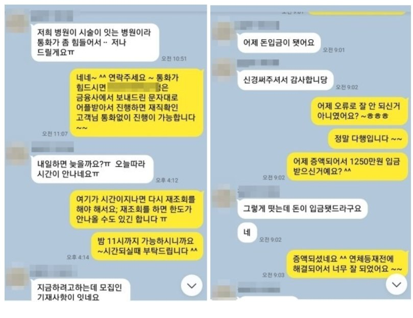

심사전화 및 재직확인 어려운 직장인 추가자금 승인사례!!!
안녕하세요~ 오늘은 제가 상담 진행해드린 김**고객님의 대출 사례를 안내해
드리겠습니다. 김** 고객님께서는 4대보험이 가입되어 있는 직장인 이셨으며, 월소득은
170만원 정도 되셨습니다. 기대출은 산와머니 2000만원, SBI저축 1800만원, 안전대부 +
유아이 1100만원, 예가람저축 1200만원으로 연봉대비 기대출이 과다하신 상황이였습니다.
김**고객님은 직업 특성상 업무가 바빠 통화가 어려웠고 게다가 카드대금 결제일이 2일이나
지난 상황이라 급하게 카드대금 해결로 문의 주셨습니다. 저는 상담 후 본인통화 및
재직전화 없이 간편하게 어플리케이션을 통해 진행 가능한 금융사로 안내해드렸고,
그 결과 1250만원을 연체가 등재 되기전에 승인받아 고객님께서도 매우 만족해 하셨습니다.
아래는 저와 김**고객님의 카톡상담 내용 일부를 캡쳐 한것이오니, 참고하시어 많은
도움 되셨으면 좋겠습니다. 감사합니다. ^^
